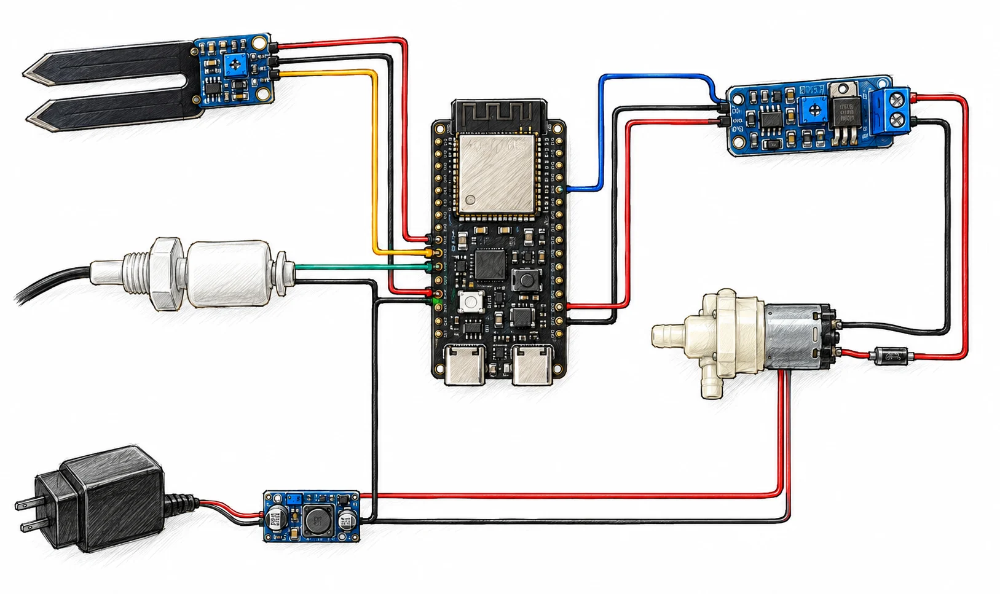

PROJET ENTREPRENEURIAL · Innovation & IoT
Fifth Element — Jardin intérieur connecté
Conception d’un pot intelligent combinant arrosage, éclairage horticole et fonctions connectées pour accompagner la culture de plantes en intérieur.

Présentation du projet
Contexte et objectifs
Conception d’un pot intelligent combinant arrosage, éclairage horticole et fonctions connectées pour accompagner la culture de plantes en intérieur.
Travail réalisé
Contribution à la définition fonctionnelle du prototype et à l’architecture électronique autour d’un ESP32-S3.
Compétences mobilisées
ESP32-S3 · IoT · Électronique · Conception de produit · Prototypage
Cette fiche présente le concept et les livrables non
confidentiels du projet. Les documents téléchargeables sont des supports académiques de
présentation.